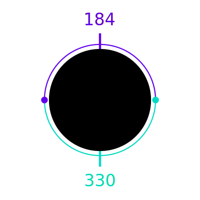
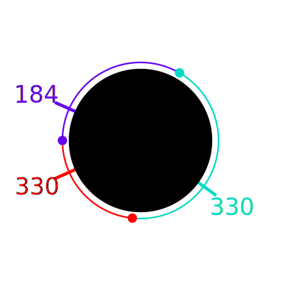
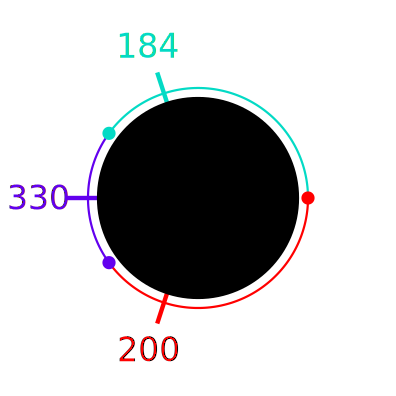

You are part of a team of researchers investigating the climate along the coast of an island. The island's coast is modeled as a circle with a circumference of K kilometers. There is a lighthouse on the coast which occupies a single point on the circle's circumference. Each point on the coast is mapped to a real number in the range [0, K); formally, point x is the point on the coast that is x kilometers away from the lighthouse when walking clockwise along the coast. For example, if K = 5, point 0 is the point where the lighthouse is, point 1.5 is the point that is 1.5 kilometers away from the lighthouse in the clockwise direction, and point 2.5 is the point that is located at the diametrical opposite of the lighthouse.
You are in charge of studying coastal temperatures. Another team installed a coastal temperature measuring system that works as follows: a number of thermometers were deployed at specific points to measure the temperature at those points. No two thermometers were placed at the same point. In that team's model, points without thermometers are assumed to have the same temperature as the one measured by the closest thermometer. For points that are equidistant from two thermometers, the thermometer in the clockwise direction is used (the first one you would encounter if walking clockwise from the point).
Unfortunately, you do not know how many thermometers the system used or where they were placed, but you do have access to the system's temperature data. It is given as two lists of N values each X1, X2, ..., XN and T1, T2, ..., TN, representing that each point x where Xi ≤ x < Xi+1 is assigned temperature Ti, for each 1 ≤ i < N, and each point x where 0 ≤ x < X1 or XN ≤ x < K is assigned temperature TN. The points are enumerated in the clockwise direction, so Xi < Xi+1, for all i.
You want to determine the smallest number of thermometers that, when placed in some set of locations, could have produced the observed data.
The first line of the input gives the number of test cases, T. T test cases follow; each consists of three lines. The first line of a test case contains two integers K and N: the circumference of the island and the size of the lists representing the temperature data. The second line contains N integers X1, X2, ..., XN. The third line contains N integers T1, T2, ..., TN. The way in which the integers in the second and third line represent the temperatures is explained above.
For each test case, output one line containing Case #x: y, where
x is the test case number (starting from 1) and y
is the minimum number of thermometers that could have produced the observed
input data, as described above.
Time limit: 30 seconds per test set.
Memory limit: 1 GB.
1 ≤ T ≤ 100.
2 ≤ N ≤ min(100, K).
0 ≤ X1.
Xi < Xi+1, for all i.
XN < K.
184 ≤ Ti ≤ 330, for all i.
Ti ≠ Ti+1, for all i.
T1 ≠ TN.
2 ≤ K ≤ 10.
2 ≤ K ≤ 109.
3 2 2 0 1 184 330 3 2 0 1 184 330 10 3 1 5 9 184 200 330
Case #1: 2 Case #2: 3 Case #3: 3
In Sample Case #1, at least 2 thermometers are needed because there are two different temperatures measured. It is possible to produce the data using exactly 2 thermometers, with one thermometer (measuring 184) at point 0.5 and another (measuring 330) at point 1.5. Note that point 0 and point 1 are equidistant from both thermometers, so the thermometer in the clockwise direction is used. The temperature measured at point 0 comes from the thermometer at point 0.5 and the temperature measured at point 1 comes from the thermometer at point 1.5.

The data from Sample Case #2 could not be produced with just 2 thermometers. It could be produced with 3 thermometers if they were placed at point 0.2, point 1.8, and point 2.8, measuring 184, 330 and 330, respectively. There are other ways to place 3 thermometers that would also yield the input data.

In Sample Case #3, one way to produce the data with 3 thermometers is to place them at point 0, point 2 and point 8, measuring 330, 184 and 200, respectively.
